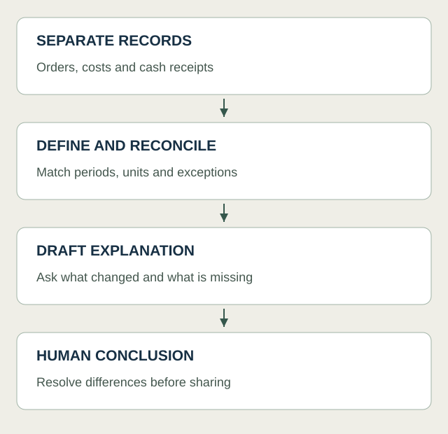

Why this caught my attention
I’m interested in financial data processing because the analysis depends so much on what happens before it. A sales record, a payment and an expense might sit in different places, even though I need them together to understand the business. Reading about Muse makes me think about that connecting work, which is also a big part of why I’m interested in n8n.
How I would use it
Meta says Muse can work with connected business tools and requires approval before publishing, sending or spending. Its announcement describes availability in the US and Canada, so I would not assume I can use it from Norway yet. Even so, the direction is relevant to what I want to learn.
I would like to explore a small monthly review built from sales, costs and cash receipts. The interesting part would be seeing where the records agree and where they do not. Higher sales might look encouraging, but I would also want to understand refunds, fees and when the money actually arrived.
I tend to think about this in steps: collect the records, make the fields consistent, calculate the changes, then use AI to help draft an explanation. That is my proposed approach to the problem, not a description of how Muse works internally. I would also want to see how much of the preparation I could build explicitly in n8n, where each step has a clear input and output.
The attraction is being able to spend less effort moving information around and more effort asking useful questions about it. But connecting more apps does not automatically give me a cleaner picture. If the dates or definitions differ, I still need to understand why.
Where I want to take this
This makes me want to develop my finance knowledge and automation skills together. I want to be able to follow a number back through the process and explain what it means, while also recognising which repetitive steps could be handled more efficiently.
I would begin with a fictional business and a small set of files, then try to produce a monthly note that I can explain line by line. That feels like a useful learning project whether or not Muse becomes my tool of choice. The broader idea I’m taking from the news is that the connection between business systems and financial understanding is becoming an interesting place to build skills.
A workflow I would like to explore

Sources
- TechCrunch: Muse business coverage — TechCrunch · Published 2026-09-29; accessed 2026-09-30
- Meta: Muse for Small Business — Meta · Published 2026-09-29; accessed 2026-09-30